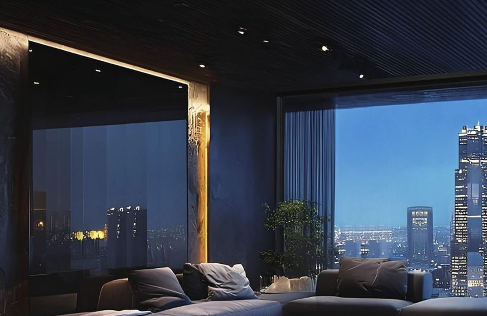

Strength System
6060-T66 aluminum profiles, patented RT thermal strips and injected corner joints for rigid frames.

Technical information is organized by structure, sealing, thermal comfort, safety, drainage and quiet motion.
A consistent technical language helps architects, dealers and project buyers compare window and door systems without reading every catalogue first.
6060-T66 aluminum profiles, patented RT thermal strips and injected corner joints for rigid frames.
Automotive-grade EPDM gaskets, welded rubber seals and negative-pressure lock points on outward openings.
Multi-chamber insulation strips, XPS glass-edge thermal padding and warm-edge glazing options.
Anti-drop glazing beads, load-bearing glass blocks, safety stays and optional multipoint hook locks.
Patented vertical drainage and dual-channel sliding-door drainage help manage heavy rain exposure.
V-shaped silent rollers and full-wrap sliding structures reduce friction and support large panels.
Product pages can carry exact numbers, sample images and scenario notes while the homepage stays as a simple outline.
Use close-up images to explain frame, sash, glass edge, gasket and hardware structure.
System depth, glass strategy, opening mode and performance focus can be compared here.
Window, hinged door, sliding door and optional scene images can be added by product type.